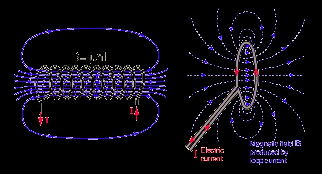

 Near field communication also popular as NFC isn't really new or cutting edge. In fact it is basically a variation of other short-range wireless technologies already used throughout the world, especially in Europe and Japan. It enables short range communication between two compatible devices that require at least one transmitting device, and another to receive the signal. A range of devices can use the NFC standard and can be considered either passive or active, depending on how the device works. Passive NFC devices include tags, and other small transmitters, that can send information to other NFC devices without the need for a power source of their own. However, they don’t really process any information sent from other sources, and can’t connect to other passive components. These often take the form of interactive signs on walls or advertisements. Active devices are able to send and receive data, and can communicate with each other as well as with passive devices. Smart phones are by far the most common implementation of active NFC devices, but public transport card readers and touch payment terminals are also good examples of the technology. Back in 2004, while Nokia, Sony and Philips got together to standardize NFC, the technology that makes it possible dates back much further and all it begins with the relationship between magnetism and electricity.When electrons flow through a conductor, they create a magnetic field. And when magnetic fields change, they can cause electrons to flow through a conductor. This relationship known as inductive coupling, allows for some interesting applications in electronics. Radio frequency identification (RFID) tags are one application of inductive coupling. This technology is a predecessor to NFC. With a RFID tag, an electronic reader generates a magnetic field. Bringing a RFID tag close to this field induces electricity within the RFID tag. The reader detects the new magnetic field from the RFID tag and registers it. Many transportation systems and security systems use this sort of technology. The RFID tag is in a card or fob that you must place near a reader to activate. This method is called passive RFID. Newer RFID technology adds the capacity to have a powered RFID tag, which we call active RFID. Active RFID tags can be used to improve the range of a tag and to store more information, among other applications. Near field communication is built on this technology. It allows for two-way communication between devices at a very short range. It uses inductive coupling the same way RFID tags do. The transmission frequency for data across NFC is 13.56 megahertz, and data can be sent at 106, 212 or 424 kilobits per second, which is quick enough for a range of data transfers – from contact details to swapping pictures and music. In order to determine what sort of information is to be exchanged between devices, the NFC standard currently has three distinct modes of operation for compliant devices. Perhaps the most common use in smart phone is the peer-to-peer mode, which allows two NFC-enabled devices to exchange various pieces of information between each other. In this mode both devices switch between active, when sending data, and passive states when receiving. Read/write mode, on the other hand, is a one way data transmission, where the active device, possibly your smart phone, links up with another device in order to read information from it. This is the mode used when you interact with an NFC advert tag. The final mode of operation is card emulation, whereby the NFC device can be used like a smart or contactless credit card in order to make payments or tap into public transport systems. There are several important technological differences between NFC and Bluetooth that gives NFC some significant benefits in certain circumstances. The main point in favor of NFC is that it has much lower power consumption than Bluetooth, even lower than the new Bluetooth 4.0(Bluetooth low energy). This makes NFC perfect for passive devices, such as the advertising tags that we mentioned earlier, as they can operate without the need for a major power source. However, this power saving does have some major drawbacks. Most noticeably, the range of transmission is much shorter than Bluetooth. While NFC has a range of around 10cm, just a few inches, Bluetooth connections can transmit data up to 10 meters or more from the source But NFC does have one advantage when it comes to speed, faster connectivity. Due to the use of inductive coupling, and the absence of manual pairing, it takes less than one tenth of a second to establish a connection between two devices, a speed which has only recently been matched by Bluetooth 4.0. Even basic Android functionality allows us to pass links, photos, contact information, or just about anything else between two devices simply by tapping them together. We may forget it's there, but NFC is a handy little thing to have around.